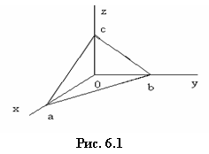
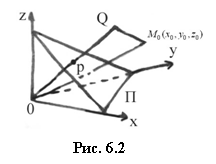

Электронный
ресурс по учебной дисциплине
1-40 04 01 «Информатика и технологии программирования».
|
||
| Оглавление | Программа | Теория | Практика | Контроль знаний | Об авторах | ||
Определение 6.1. Уравнение $\varphi(x,y,z)$ называется уравнением поверхности $S$, если координаты точки $M(x,y,z)$ удовлетворяют этому уравнению тогда и только тогда, когда $M\in S$.
Пересечение двух поверхностей $S_1$ и $S_2$ с уравнениями $\varphi_1(x,y,z)=0$ и $\varphi_2(x,y,z)=0$ задает в пространстве кривую посредством системы уравнений $$ \begin{cases}\varphi_1(x,y,z)=0 \\\varphi_2(x,y,z)=0. \end{cases} $$
Любой ненулевой вектор $\vec{n}$, перпендикулярный плоскости, называется ее нормальным вектором.
Пусть для плоскости $\Pi$ известен ее нормальный вектор $\vec{n}=(A,B,C)$ и точка $M_0(x_0,y_0,z_0)$, лежащая в этой плоскости. Пусть $M(x,y,z)$ – произвольная точка пространства $Oxyz$. Очевидно, что $$ M\in\Pi\Leftrightarrow\vec{n}\overrightarrow{M_0M}, $$ что равносильно уравнению
(6.1)
$A(x-x_0)+B(y-y_0)+C(z-z_0)=0.$
Уравнение (6.1) – это уравнение плоскости $\Pi$.
Итак, было показано, что любая плоскость задается уравнением, линейным относительно координат $x$, $y$, $z$. Верно и обратное: каждое уравнение
задает плоскость. Действительно, предположим для определенности, что $C\ne 0$, и перепишем (6.2) в виде $$ A(x-0)+B(y-0)+C(z+D/C)=0. $$ Это уравнение определяет плоскость с нормальным вектором $\vec{n}=(A,B,C)$, проходящую через точку $M_0(0,0,-D/C)$. Уравнение (6.2) называют общим уравнением плоскости.
Общее уравнение плоскости (6.2) называют полным, если все его коэффициенты $A$,$B$,$C$,$D\ne 0$, и неполным в противном случае.
Относительно неполных уравнений следует помнить следующее:
а) если $D=0$, то плоскость проходит через начало координат (координаты точки $O(0,0,0)$ удовлетворяют в этом случае уравнению (6.2));
б) если $A=0\;(B=0,\:C=0)$, то плоскость параллельна оси $Ox\;(Oy,Oz)$. Действительно, если параметр $A=0$, то нормальный вектор $\vec{n}=(0,B,C)$ перпендикулярен оси $Ox$, т. е. плоскость параллельна $Ox$.
Пример 1. Плоскость $\Pi$ задана уравнением $By+D=0\;\Rightarrow\;\Pi\parallel Ox,\:\Pi\parallel Oz\Rightarrow\Pi\parallel Oxz$.•
Рассмотрим теперь полное уравнение плоскости $Ax+By+Cz+D=0$. Так как все коэффициенты отличны от нуля, то это уравнение можно записать в виде $$ \frac{x}{-\frac{D}{A}}+\frac{y}{-\frac{D}{B}}+\frac{z}{-\frac{D}{C}}=1. $$ Обозначив $a=-\frac{D}{A}$, $b=-\frac{D}{B}$, $c=-\frac{D}{C}$ получим уравнение
(6.3)
$\frac{x}{a}+\frac{y}{b}+\frac{z}{c}=1.$
Уравнение (6.3) называют уравнением плоскости в отрезках. Числа $a$, $b$, $c$ имеют здесь простой геометрический смысл (рис. 6.1) – они равны по модулю величинам отрезков, отсекаемых плоскостью на осях координат $Ox$, $Oy$, $Oz$ соответственно (отрезок отсчитывается от начала координат c учетом знака $a$, $b$, $c$ соответственно).
Чтобы убедиться в этом, достаточно найти точки пересечения плоскости, заданной уравнением (6.3), с осями координат. Например, точка $(a,0,0)$ пересечения с осью $Ox$ находится совместным решением уравнения (6.3) и системы уравнений $y=z=0$ оси $Ox$. Аналогично находятся точки пересечения плоскости с осями $Oy$ и $Oz$ – это $(0,b,0)$ и $(0,0,c)$ соответственно.
Рассмотрим две плоскости $\Pi_1$ и $\Pi_2$, заданные соответственно уравнениями $$ A_1x+B_1y+C_1z+D_1=0,\; A_2x+B_2y+C_2z+D_2=0. $$
Легко видеть, что один из двух смежных двугранных углов, образуемых плоскостями, совпадает с углом $\varphi$ между нормальными векторами плоскостей $\Pi_1$ и $\Pi_2$. Следовательно, $$ \cos\varphi=\frac{\vec{n_1}\vec{n_2}} {\left|\vec{n_1}\right|\left|\vec{n_2}\right|} $$ где $\vec{n_1}=(A_1,B_1,C_1)$ и $\vec{n_1}=(A_2,B_2,C_2)$. Тогда $$ \cos\varphi=\frac{A_1A_2+B_1B_2+C_1C_2} {\sqrt{{A_1}^2+{B_1}^2+{C_1}^2}\sqrt{{A_2}^2+{B_2}^2+{C_2}^2}}. $$
Условие параллельности плоскостей равносильно коллинеарности их нормальных векторов: $$ \Pi_1 \parallel \Pi_2 \Leftrightarrow \vec{n_1} \parallel \vec{n_2} \Leftrightarrow \frac{A_1}{A_2}=\frac{B_1}{B_2}=\frac{C_1}{C_2}. $$
Условие перпендикулярности плоскостей равносильно ортогональности их нормальных векторов: $$ \Pi_1 \perp \Pi_2 \Leftrightarrow \vec{n_1} \vec{n_2}=0 \Leftrightarrow A_1A_2+B_1B_2+C_1C_2=0. $$
Пусть дана плоскость $\Pi$. Опустим из начала координат перпендикуляр $OP$ на данную плоскость. Обозначим $p=\left|\overrightarrow{OP}\right|$. На прямой $OP$ возьмем единичный вектор $\vec{n_0}$, направление которого совпадает с направлением $\overrightarrow{OP}$ (если $O\in\Pi$, то $\vec{n_0}$ – любой единичный нормальный вектор плоскости). Так как $\vec{n_0}$ – единичный вектор, то $\vec{n_0}=\cos\varalpha,\cos\varbeta,\cos\vargamma)$, т. е. его компонентами являются направляющие косинусы этого вектора, здесь $\varalpha$, $\varbeta$, $\vargamma$ – углы, образованные вектором $\vec{n_0}$ с осями координат. Очевидно, что $$ M(x,y,z) \in \Pi \Leftrightarrow np_{\vec{n_0}} \overrightarrow{OM}=p $$ но
$np_{\vec{n_0}}\overrightarrow{OM}= \vec{n_0}\overrightarrow{OM}$, где $\overrightarrow{OM}=(x,y,z)$.
Отсюда получаем уравнение плоскости $\Pi$
(6.4)
$x\cos\varalpha+y\cos\varbeta+z\cos\vargamma-p=0$.
Уравнение (6.4) называют нормальным уравнением плоскости. Еще раз повторим, что $\varalpha$, $\varbeta$, $\vargamma$ – углы, образованные перпендикуляром к плоскости с осями координат, $p$ – расстояние от плоскости до начала координат.
Чтобы перейти от общего уравнения плоскости (6.2) к ее нормальному уравнению (6.4), надо общее уравнение умножить на нормирующий множитель $$ \varmu=\pm\frac{1}{\sqrt{A^2+B^2+C^2}}, $$ где знак $\varmu$ выбирается противоположным знаку свободного члена при $D\ne 0$ в уравнении (6.2), т. е. $\sgn\varmu=-\sgn D$, и положительным при $D=0$.
Упражнение. Вывести выражение для нормирующего множителя $\varmu$.
Пусть дана точка $M_0(x_0,y_0,z_0)$ в пространстве. На рис. 6.2 представлен случай $M_0\notin\Pi$. Спроектируем эту точку на ось, определяемую вектором $\vec{n_0}$. Так, как показано на рис. 6.2, ее проекцией будет точка $Q$. Если $M_0\in\Pi$, то $Q=P$. Расстояние $d$ от точки $M_0$ до плоскости $\Pi$ вычисляется так: $$ d=\left|\overrightarrow{PQ}\right|= \left|\overrightarrow{OQ}-\overrightarrow{OP}\right|= \left|np_{\vec{n_0}}\overrightarrow{OM_0}-p\right|. $$ Таким образом, $$ d=\left|x_0\cos\varalpha+y_0\cos\varbeta+z_0\cos\vargamma-p\right|, $$ или, если плоскость $\Pi$ задана своим общим уравнением, справедлива формула $$ d=\frac{\left|Ax_0+By_0+Cz_0+D\right|}{\sqrt{A^2+B^2+C^2}}. $$
Положение прямой в пространстве полностью определяется заданием какой-либо точки на прямой и направляющего вектора прямой. (Напомним, что направляющим называется любой ненулевой вектор, параллельный прямой.) Рассмотрим прямую L, на которой дана точка $M_{0}(x_{0}, y_{0}, z_{0})$ и для которой известен направляющий вектор $\overrightarrow{S} = (m,n,p)$.
Пусть $M(x,y,z)$ – любая точка пространства. Очевидно, что $M \in L$ тогда и только тогда, когда вектор $\overrightarrow{M_{0}M}$ коллинеарен вектору $\overrightarrow{S}$ , т. е. когда $\overrightarrow{M_{0}M} = t\overrightarrow{S}$ , где $t$ – скалярный множитель, называемый параметром. Он может принимать любое действительное значение в зависимости от положения точки $M$ на прямой $L$.
Таким образом, т. к. $\overrightarrow{M_{0}M} = (x – x_{0}, y – y_{0}, z – z_{0})$, из векторного равенства $\overrightarrow{M_{0}M} = t\overrightarrow{S}$ получаем систему уравнений относительно координат точки $M(x,y,z)$:
| $ \begin{cases}x - x_{0} = tm\\y - y_{0} = tn\\z - z_{0} = tp\end{cases} \ $ |
или
| $ \begin{cases} x = x_{0} + tm\\y = y_{0} + tn\\z = z_{0} + tp . \end{cases} $ | $(6.5)$ |
Это параметрические уравнения прямой. При изменении параметра $t$ изменяются координаты $x,y,z$ и точка $M(x,y,z)$ перемещается по прямой $L$.
Используя радиус-векторы $\overrightarrow{r} = \overrightarrow{OM}$ и $\overrightarrow{r_{0}} = \overrightarrow{OM_{0}}$ точек $M$ и $M_{0}$ , систему уравнений (6.5) можно записать в виде векторного уравнения прямой
| $ \overrightarrow{r} = \overrightarrow{r_{0}} + t\overrightarrow{S} . $ |
Из системы (6.5) можно выразить параметр $t$ следующим образом:
| $ t = \dfrac{x - x_{0}}{m} = \dfrac{y - y_{0}}{n} = \dfrac{z - z_{0}}{k} . $ |
Поэтому систему уравнений (6.5) часто записывают в виде
| $ \dfrac{x - x_{0}}{m} = \dfrac{y - y_{0}}{n} = \dfrac{z - z_{0}}{p}. $ | $(6.6)$ |
Систему уравнений (6.6) называют каноническими уравнениями прямой. Отметим, что система (6.6) – только другая форма записи системы (6.5). Например,
| $ \dfrac{x - 1}{0} = \dfrac{y - 1}{0} = \dfrac{z}{1} \Leftrightarrow \begin{cases} x = 1\\ y = 2\\ z = t . \end{cases} $ |
Чтобы перейти от канонических уравнений прямой к ее параметрическим уравнениям, надо все части равенства (6.6) приравнять к $t$ и выразить $x, y, z$ через $t$.
Пусть теперь прямая $L$ задана как пересечение двух непараллельных плоскостей, т. е. системой линейных уравнений
| $ \begin{cases} A_{1}x + B_{1}y + C_{1}z + D_{1} = 0\\ A_{2}x + B_{2}y + C_{2}z + D_{2} = 0 . \end{cases} $ | $(6.7)$ |
Систему (6.7) иногда называют общими уравнениями прямой.
Как перейти от общих уравнений прямой L к ее каноническим уравнениям?
1. Найдем точку $M_{0} \in L$. Для этого придадим произвольное значение (например, 0) одной из координат и решим систему (6.7) относительно двух оставшихся координат.
2. Найдем направляющий вектор $\overrightarrow{S}$ прямой $L$. Так как прямая перпендикулярна нормальным векторам $\overrightarrow{n_{1}} = (A_{1}, B_{1}, C_{1})$ и $\overrightarrow{n_{2}} = (A_{2}, B_{2}, C_{2})$, то за направляющий вектор можно принять векторное произведение $n_{1} \times n_{2}$ , т. е.
| $ \overrightarrow{S}= \overrightarrow{n_{1}}\times\overrightarrow{n_{2}}= \begin{vmatrix} \overrightarrow{i} & \overrightarrow{j} & \overrightarrow{k} \\ A_{1} & B_{1} & C_{1} \\ A_{2} & B_{2} & C_{2} \end{vmatrix} . $ |
Пример 2. Пусть прямая $L$ задана общими уравнениями
| $ \begin{cases} x + y - 2z - 5 = 0\\ x - y + 3z - 1= 0. \end{cases} $ |
Полагая $z = 0$ , получаем систему линейных уравнений относительно $x$ и $y$
| $ \begin{cases} x + y = 5\\ x - y = 1 \end{cases} \Rightarrow \begin{cases} x = 3\\ y = 2 . \end{cases} $ |
То есть $M_{0}(3,2,0) \in L $. Найдем направляющий вектор прямой $L$:
| $ \overrightarrow{S} = \begin{vmatrix} \overrightarrow{i} & \overrightarrow{j} & \overrightarrow{k} \\ 1 & 1 & -2\\ 1 & -1 & 3 \end{vmatrix} = \overrightarrow{i} -5\overrightarrow{j} - 2\overrightarrow{k} , $ |
т. е. $m = 1, n = – 5, p = – 2$. Отсюда канонические уравнения прямой $L$ имеют вид
| $ \dfrac{x-3}{1} = \dfrac{y-2}{-5} = \dfrac{z}{-2} . $ |
Пусть прямая $L$ проходит через две точки $M_{0}(x_{0}, y_{0}, z_{0})$ и $M_{1}(x_{1}, y_{1}, z_{1})$. Тогда за направляющий вектор прямой можно принять вектор $\overrightarrow{S} = \overrightarrow{M_{0}M_{1}} = (x_{1} – x_{0}, y_{1} – y_{0}, z_{1} – z_{0})$ и канонические уравнения прямой $L$ будут иметь вид
| $ \dfrac{x - x_{0}}{x_{1} - x_{0}} = \dfrac{y - y_{0}}{y_{1} - y_{0}} = \dfrac{z - z_{0}}{z_{1} - z_{0}} . $ |
Пусть даны две прямые $L_{1}$ и $L_{2}$ с направляющими векторами $\overrightarrow{S_{1}} = (m_{1}, n_{1}, p_{1})$ и $\overrightarrow{S_{2}} = (m_{2}, n_{2}, p_{2})$ соответственно. Один из смежных углов между прямыми совпадает с углом $\tt φ $ между направляющими векторами. Тогда
| cos φ $ = \dfrac{\overrightarrow{S_{1}}\overrightarrow{S_{2}}}{\left| \overrightarrow{S_{1}}\right| \left| \overrightarrow{S_{2}} \right|} = \dfrac{m_{1}m_{2} + n_{1}n_{2} + p_{1}p_{2}}{\sqrt{m_{1}^{2} + n_{1}^{2} + p_{1}^{2}}{\sqrt{m_{2}^{2} + n_{2}^{2} + p_{2}^{2}}} } . $ |
Условие параллельности прямых равносильно условию коллинеарности векторов $\overrightarrow{S_{1}}$ и $\overrightarrow{S_{2}}$, т. е. $\dfrac{m_{1}}{m_{2}} = \dfrac{n_{1}}{n_{2}} = \dfrac{p_{1}}{p_{2}}$ – компоненты векторов пропорциональны.
Условие перпендикулярности прямых равносильно условию ортогональности векторов $\overrightarrow{S_{1}}$ и $\overrightarrow{S_{2}}$, т. е. имеет вид $m_{1}m_{2} + n_{1}n_{2} + p_{1}p_{2} = 0$.
Две прямые в пространстве могут: а) пересекаться, б) быть параллельными, в) скрещиваться. В первых двух случаях прямые лежат в одной плоскости.
Пусть известны канонические уравнения прямых $L_{1}$ и $L_{2}$:
| $ \dfrac{x - x_{1}}{m_{1}} = \dfrac{y - y_{1}}{n_{1}} = \dfrac{z - z_{1}}{p_{1}} , \dfrac{x - x_{2}}{m_{2}} = \dfrac{y - y_{2}}{n_{2}} = \dfrac{z - z_{2}}{p_{2}} . $ |
Очевидно, для того чтобы прямые $L_{1}$ и $L_{2}$ лежали в одной плоскости, необходимо и достаточно, чтобы векторы $\overrightarrow{S_{1}} = (m_{1}, n_{1}, p_{1}), \ \overrightarrow{S_{2}} = (m_{2}, n_{2}, p_{2})$ и $\overrightarrow{M_{1}M_{2}} = (x_{2} - x_{1}, y_{2} - y_{1}, z_{2} - z_{1})$ были компланарны. Последнее условие равносильно равенству нулю их смешанного произведения. То есть
| $ \begin{vmatrix} x_{2} - x_{1} & y_{2} - y_{1} & z_{2} - z_{1}\\ m_{1} & n_{1} & p_{1}\\ m_{1} & n_{1} & p_{1} \end{vmatrix} = 0 . $ |
Рассмотрим плоскость П, заданную общим уравнением
| $ Ax + By + Cz + D = 0 , $ |
и прямую $L$, заданную каноническими уравнениями
| $ \dfrac{x - x_{0}}{m} = \dfrac{y - y_{0}}{n} = \dfrac{z - z_{0}}{p} . $ |
Так как угол φ между прямой $L$ и плоскостью П является дополнительным до $\dfrac{ \texttt{π}}{2}$ к углу $ \texttt{γ}$ между векторами $\overrightarrow{S} = (m,n,p)$ и $\overrightarrow{n} = (A,B,C)$ (рис. 6.3), то
| $ \sin \texttt{φ} = \cos \texttt{γ} = \dfrac{\overrightarrow{n}\overrightarrow{S}}{\left| \overrightarrow{n} \right| \left| \overrightarrow{S} \right| } = \dfrac{Am + Bn + Cp}{\sqrt{A^{2} + B^{2} + C^{2}}\sqrt{m^{2} + n^{2} + p^{2}}} . $ | $(6.8)$ |
Условие параллельности прямой $L$ и плоскости П получается из формулы (6.8) при $ \texttt{φ} = 0$, т. е. имеет вид
| $ Am + Bn + Cp = 0 . $ |
Условие перпендикулярности прямой и плоскости равносильно коллинеарности нормального вектора плоскости и направляющего вектора прямой, т. е. имеет вид
| $ \dfrac{A}{m} = \dfrac{B}{n} = \dfrac{C}{p} . $ |
Прямая $L$ будет лежать в заданной плоскости П, если $M_{0}(x_{0}, y_{0}, z_{0}) \in$ П и направляющий вектор $\overrightarrow{S} = (m, n, p)$ прямой перпендикулярен нормальному вектору $\overrightarrow{n} = (A, B, C)$ плоскости, т. е. если выполнены условия
| $ \begin{cases} Ax_{0} + By_{0} + Cz_{0} + D = 0\\ Am + Bn + Cp = 0 . \end{cases} $ |